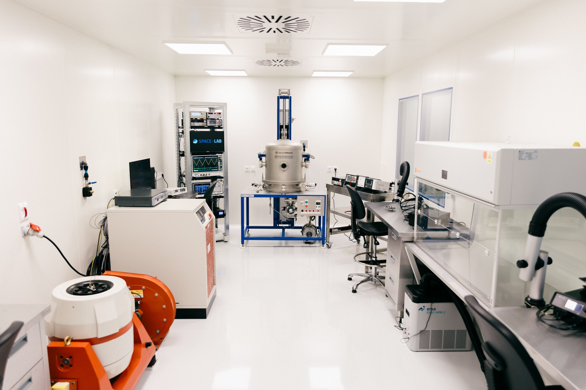

Built for our research, open to yours
We build and test our own instruments in Slovakia’s first space cleanroom in Košice, and we measure the particle environment from a laboratory at 2634 m on Lomnický štít. Both are now open to research institutions and companies — and 130 km apart by road, so a partner can visit both in a day.
Our Facilities
Where our instruments are built and our measurements are made

Space cleanroom
Twenty-five square metres of ISO class 7 clean space in Košice, with an ISO class 5 laminar zone inside it, opened in May 2026 as the first space cleanroom in Slovakia. We develop, test and integrate flight electronics here under ESD control, to ECSS standards.
Capability: ISO 7 clean assembly, vibration and thermal-vacuum testing
Explore the cleanroom →
Lomnický štít
At 2634 m, the Space Physics Laboratory at Lomnický štít has run a neutron monitor continuously since 1981 — more than four decades of cosmic ray measurements, now alongside a SEVAN particle monitor and high-energy photon observations during thunderstorms.
Capability: continuous cosmic ray and high-energy particle monitoring
Explore the laboratory →Talk to us about access
Tell us what you need to measure or test and we will tell you honestly whether our facilities fit. Both facilities are opened to partners under OPENLABS SAV (2026–2029, Programme Slovakia 2021–2027 · ERDF) — instrument hosting at Lomnický štít and serviced or supervised use of the cleanroom are agreed case by case, and enquiries about joint projects go to the same place.